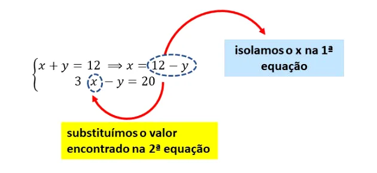
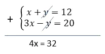
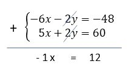

Um sistema de equações é constituído por um conjunto de equações que apresentam mais de uma incógnita. Para resolver um sistema é necessário encontrar os valores que satisfaçam simultaneamente todas as equações. Um sistema é chamado do 1º grau, quando o maior expoente das incógnitas, que integram as equações, é igual a 1 e não existe multiplicação entre essas incógnitas.
Podemos resolver um sistema de equações do 1º grau, com duas incógnitas, usando o método da substituição ou o da soma.
Esse método consiste em escolher uma das equações e isolarmos uma das incógnitas, para determinar o seu valor em relação a outra incógnita. Depois, substituímos esse valor na outra equação. Desta forma, a segunda equação ficará com uma única incógnita e, assim, poderemos encontrar o seu valor final. Para finalizar, substituímos na primeira equação o valor encontrado e, assim, encontramos também o valor da outra incógnita.
Desta forma, a segunda equação ficará com uma única incógnita e, assim, poderemos encontrar o seu valor final. Para finalizar, substituímos na primeira equação o valor encontrado e, assim, encontramos também o valor da outra incógnita.
Resolva o seguinte sistema de equação
Vamos começar escolhendo a primeira equação do sistema, que é a equação mais simples, para isolar o x. Assim temos:
Após substituir o valor de x, na segunda equação, podemos resolvê-la, da seguinte maneira:
Agora que encontramos o valor do y, podemos substituir esse valor da primeira equação, para encontrar o valor do x:
Assim, a solução para o sistema dado é o par ordenado (8, 4). Repare que esse resultado tornam ambas as equações verdadeiras, pois 8 + 4 = 12 e 3.8 - 4 = 20.
No método da adição buscamos juntar as duas equações em uma única equação, eliminando uma das incógnitas.
Para isso, é necessário que os coeficientes de uma das incógnitas sejam opostos, isto é, devem ter o mesmo valor e sinais contrários.
Para exemplificar o método da adição, vamos resolver o mesmo sistema anterior:
Note que nesse sistema a incógnita y possui coeficientes opostos, ou seja, 1 e - 1. Então, iremos começar a calcular somando as duas equações, conforme indicamos abaixo:
Ao anular o y, a equação ficou apenas com o x, portanto agora, podemos resolver a equação:

Para encontrar o valor do y, basta substituir esse valor em uma das duas equações. Vamos substituir na mais simples:
Note que o resultado é o mesmo que já havíamos encontrado, usando o método da substituição.
Quando as equações de um sistema não apresentam incógnitas com coeficientes opostos, podemos multiplicar todos os termos por um determinado valor, a fim de tornar possível utilizar esse método.
Por exemplo, no sistema abaixo, os coeficientes de x e de y não são opostos:
Portanto, não podemos, inicialmente, anular nenhuma das incógnitas. Neste caso, devemos multiplicar por algum número que transforme o coeficiente em um número oposto do coeficiente da outra equação.
Podemos, por exemplo, multiplicar a primeira equação por - 2. Contudo, devemos ter o cuidado de multiplicarmos todos os termos por - 2, para não modificarmos a igualdade.
Assim, o sistema equivalente ao que queremos calcular é:
Agora, é possível resolver o sistema por adição, conforme apresentado abaixo:
Agora, é possível resolver o sistema por adição, conforme apresentado abaixo:
Assim, a solução para o sistema é o par ordenado (- 12, 60)
Uma garrafa PET (politereftalato de etileno) com sua tampa custa sessenta centavos. Sabendo que a garrafa custa cinquenta centavos a mais que a tampa, quanto custa só a tampa?
a) R$ 0,05
b) R$ 0,15
c) R$ 0,25
d) R$ 0,35
Considerando x o valor da garrafa e y o valor da tampa, temos o seguinte sistema:
Resolvendo o sistema por adição, temos:
x = 0,55 , que é o valor da garrafa. Logo só a tampa custa 0,55-0,50 = 0,05
Portanto a resposta é a alternativa: a) R$ 0,05